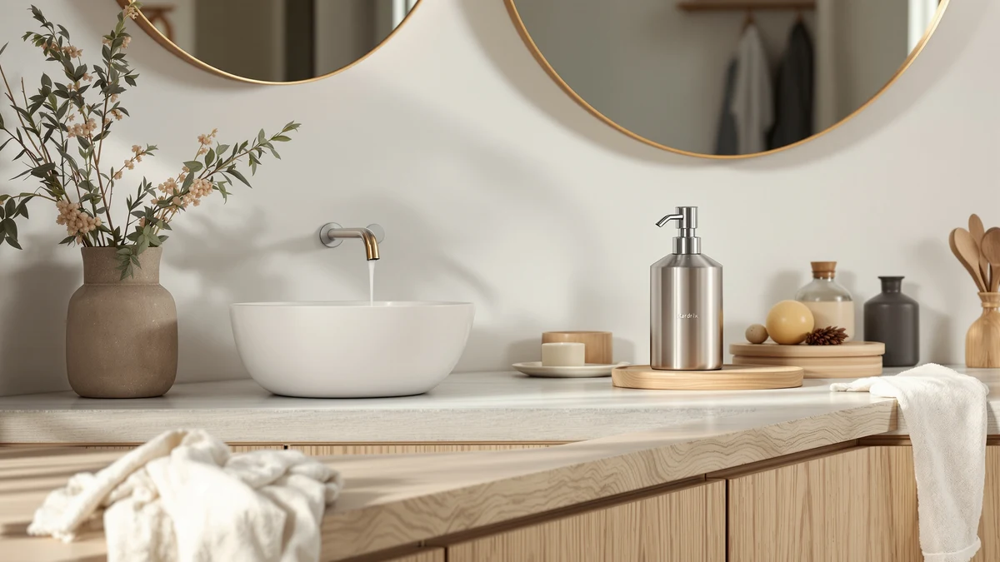

Quick Answer
The Stardrix Stainless Steel Extra Large is the largest pump dispenser we compared for this stardrix stainless steel extra review, priced at $38.99 with an ABS plastic body finished to resemble stainless steel. It costs more than the brand's own Heavy Duty version and the two commercial wall-mount picks below, so it makes the most sense if you specifically need the bigger reservoir.
Our pick: Stardrix Stainless Steel Extra Large, $38.99 Check Price on Amazon
Things to Know Before You Buy
- This stardrix stainless steel extra review is based on manufacturer specs, current Amazon pricing and verified owner feedback rather than a physical product test.
- The $38.99 price makes the Extra Large the most expensive of the four dispensers compared here.
- The body is ABS plastic with a stainless steel-style finish, not solid metal, based on the listed specs.
- Stardrix also sells a Heavy Duty Stainless Steel version for $32.99 if you don't need the larger reservoir.
- DUTYWORKS and Gorlary both sell wall-mounted commercial alternatives for under $30 if countertop space matters more than brand.
This stardrix stainless steel extra review looks at whether Stardrix's largest pump dispenser justifies its $38.99 price against the brand's own cheaper model and two commercial wall-mount options.
Soap dispensers all promise the same basic thing: a working pump and a container that doesn't look out of place on your counter. The Stardrix Stainless Steel Extra Large adds a bigger reservoir and a finish designed to pass for metal, which is exactly why it costs more than the rest of the lineup we researched. Whether that extra size and look are worth six to ten dollars more depends on how often you refill and where the dispenser sits. A single-sink apartment bathroom rarely needs the extra capacity, but a family bathroom with two or three people washing hands and shaving over the same sink burns through a small bottle faster than most shoppers expect.
We picked these four dispensers for this comparison because they cover the realistic range a shopper actually faces when searching for a Stardrix product: the brand's own two sizes, plus two lower-cost wall-mount alternatives from other manufacturers that solve the same countertop-space problem in a different way. None of the four is a bad product on paper. The differences come down to price, capacity and where you plan to put the thing.
Why You Should Trust Us
Ilane Tall covers bathroom and kitchen fixtures for Best Soap Dispensers and put together this stardrix stainless steel extra review by comparing manufacturer specifications, current Amazon pricing and patterns across verified buyer feedback. We don't run a private lab and we don't claim to have personally installed every soap dispenser we cover, and we won't pretend otherwise. Instead we cross-check listed materials, capacity and price against comparable models so you can see how a product like the Stardrix Stainless Steel Extra Large actually stacks up against the rest of the field. That means reading through the manufacturer's own listing details, checking what independent sellers charge for the same model, and reading a sample of verified owner reviews to see whether real buyers report the same strengths and weaknesses the spec sheet suggests. Every price and spec cited here reflects the product listing at the time of publication and gets rechecked as prices change, so a figure quoted today may drift by a few dollars in either direction by the time you read it.
Our Research Experience
For this stardrix stainless steel extra review, we did not install every unit ourselves or run any kind of side-by-side physical comparison. Instead, we compared the Stardrix Stainless Steel Extra Large against its closest competitors on facts that are actually verifiable: listed price, stated materials, capacity claims and what verified Amazon buyers report after living with the product. We read through the specs Stardrix publishes for both the Extra Large and the Heavy Duty models, checked how those specs line up with the DUTYWORKS and Gorlary wall-mount listings, and looked for patterns across owner feedback rather than relying on a single glowing or negative review. That approach lets us tell you how the Extra Large's $38.99 price and ABS-plastic-with-steel-finish build compare to the alternatives, without pretending we ran a lab test we didn't actually perform.
Overview & Specs

Stardrix Stainless Steel Extra Large
What we like
- Extra Large size holds more soap between refills than the other three dispensers compared here
- Stainless steel-style finish looks less like a plastic bottle on a bathroom counter
- Comes from the same Stardrix line as the brand's lower-priced Heavy Duty model
Flaws but not dealbreakers
- At $38.99 it's the most expensive dispenser in this comparison
- Body is ABS plastic, not solid steel, so the finish can show wear over years of use
- Larger footprint takes up more counter space than the wall-mount alternatives
| Material | ABS plastic |
| Size | Extra Large |
The Stardrix Stainless Steel Extra Large is built around one idea: more soap between refills. Its size is listed as Extra Large, a step above both the brand's own Heavy Duty Stainless Steel and the two wall-mount commercial dispensers we compared it against. That extra capacity is the main reason to pick this model over the cheaper options below, especially in a bathroom shared by several people who would otherwise refill a smaller bottle every week.
The body is ABS plastic finished to resemble stainless steel rather than solid metal, according to the product specs. That's a reasonable trade-off for keeping weight and price down, though the surface can scratch or dull faster than a true metal dispenser over a few years of daily pumps. At $38.99, it costs roughly six dollars more than the Stardrix Heavy Duty and about ten dollars more than the DUTYWORKS and Gorlary wall-mount picks, so the size increase needs to matter to you for the price to make sense.
What We Liked
The biggest thing going for the Stardrix Stainless Steel Extra Large is right in its name: it's the largest dispenser in this stardrix stainless steel extra review, and that size solves a real problem in busy bathrooms where a small pump bottle runs dry every few days. Buyers of the Stardrix line also mention the steel-look finish holding up well against fingerprints compared to plain white plastic bottles, which matters if the dispenser sits somewhere visible. Because Stardrix also sells the Heavy Duty Stainless Steel at a lower price, buyers who like this design can size down without switching brands or finishes.
Because the Extra Large and Heavy Duty share the same brand and finish, choosing between them comes down mostly to how much reservoir size you actually need rather than any obvious difference in overall design. That makes shopping simpler if you're outfitting more than one sink and want a matched look without necessarily paying the Extra Large price at every fixture.
What Could Be Better
The $38.99 price is the clearest drawback here. It's the highest of the four dispensers we compared, and the gap over the Heavy Duty model is hard to justify unless you specifically need the bigger reservoir. The ABS plastic body is also worth knowing about upfront: it looks like stainless steel in photos, but it isn't solid metal, so buyers expecting a heavy, cold-to-the-touch dispenser may be surprised by how light it actually feels. Anyone tight on counter space should weigh the Extra Large's bigger footprint against the wall-mount DUTYWORKS and Gorlary options, which clear the counter entirely.
Price aside, the Extra Large also asks you to commit to a bigger object sitting on your sink permanently. That's an easy trade when the size actually gets used, but it's a poor fit for a small pedestal sink or a shared powder room where counter real estate is already tight. Shoppers who read this stardrix stainless steel extra review looking for a compact option are better served by one of the wall-mount alternatives below.
Who Is It For?
The Stardrix Stainless Steel Extra Large fits households that go through soap fast enough that weekly refills get old, and that want a dispenser that reads as metal rather than plastic on the counter. It's a weaker fit for a single guest bathroom or a shared office restroom, where the smaller Stardrix Heavy Duty or one of the wall-mounted commercial options below costs less and takes up less room. If price matters more than capacity, this stardrix stainless steel extra review points toward the cheaper alternatives instead.
It also suits buyers who already own or like the Stardrix look and would rather stay within one brand than mix a Stardrix pump with a DUTYWORKS or Gorlary fixture elsewhere in the same bathroom. Consistency across fixtures is a small thing, but it's the kind of detail that shows up in owner reviews more often than you'd expect.
Alternatives to Consider
If the Extra Large's price or countertop footprint doesn't work for you, these three alternatives cover a lower-cost Stardrix option and two wall-mounted commercial dispensers built for shared sinks.

Editor’s Pick
Stardrix Heavy Duty Stainless Steel
The same Stardrix design in a smaller size, for about six dollars less than the Extra Large.
$32.99
Check Price on Amazon
Best Value
DUTYWORKS Commercial Soap Dispenser Wall
A wall-mounted option that clears counter space entirely, built for shared restrooms rather than a single bathroom sink.
$29.99
Check Price on Amazon
Premium Choice
Gorlary Commercial Soap Dispenser Wall
The least expensive pick here, another wall-mount dispenser aimed at commercial washrooms rather than home counters.
$28.99
Check Price on AmazonFrequently Asked Questions
Is the Stardrix Stainless Steel Extra Large worth $38.99?
In this stardrix stainless steel extra review, the $38.99 price sits about six dollars above the Stardrix Heavy Duty Stainless Steel and roughly ten dollars above the DUTYWORKS and Gorlary wall-mount picks. It earns that gap mainly through its larger reservoir, which matters more in a busy household bathroom than in a single guest sink.
What is the Stardrix Stainless Steel Extra Large dispenser made of?
According to the product listing, the body is ABS plastic finished to resemble stainless steel rather than solid metal. That keeps the unit lighter and the price lower than an all-metal dispenser, though the finish can show wear faster than true stainless steel over years of daily use.
How does the Stardrix Extra Large compare to the Stardrix Heavy Duty model?
Both come from the same Stardrix line, but the Heavy Duty Stainless Steel sells for $32.99, about six dollars less than the Extra Large. Buyers who want the bigger reservoir tend to pick the Extra Large, while anyone who needs a reliable everyday pump without the added size usually finds the Heavy Duty version does the same job for less.
Final Verdict
This stardrix stainless steel extra review comes down to one question: do you need the extra capacity badly enough to pay $38.99 instead of $32.99 for the Stardrix Heavy Duty Stainless Steel, or under $30 for a DUTYWORKS or Gorlary wall-mount dispenser? For most single-bathroom households, the smaller Stardrix model or one of the commercial wall-mount picks covers the same basic job for less money. The Extra Large earns its higher price only when refill frequency is the problem you're actually trying to solve.